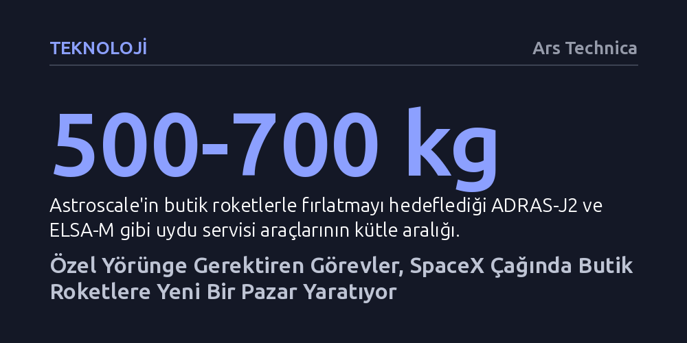

TEKNOLOJI · Ars Technica · 2026-09-12
Uzay çöplerini toplama ve uydu servisi görevleri, ortak fırlatmalar yerine hedefe özel rota gerektirdiği için 1 ton altı butik roketlere talep yaratıyor. Isar Aerospace'in son yörünge başarısı, piyasadaki bu kritik kapasite açığını kapatabilecek somut bir alternatif sunuyor.
SpaceX'in fırlatma sektöründeki ezici üstünlüğüne rağmen, özel rota ve hassas manevra arayan yeni nesil uzay operasyonlarının küçük ölçekli roket girişimlerini ayakta tutacak gerçek bir ticari pazar yarattığını gösterir.

SpaceX'in Falcon 9 ile yakaladığı baş döndürücü fırlatma temposuna rağmen uydu operatörleri küresel ölçekte ciddi bir kapasite kıtlığından şikayet ediyor. Sektörde maliyetleri düşürmenin birincil yolu olarak görülen paylaşımlı uçuşlar (rideshare), yüzlerce uydunun tek bir büyük roketle aynı genel yörüngeye bırakılması prensibine dayanıyor. Ancak bu yaklaşım, uydusunu rastgele bir yörüngeye değil, belirli bir hedefin tam karşısına yerleştirmek zorunda olan operatörlerin işine yaramıyor.
Özellikle ömrünü tamamlamış uydulara servis verme, uzay çöplerini temizleme veya yörüngede yakıt ikmali yapma gibi operasyonlar yürüten şirketler, ana roketin belirlediği rotaya bağımlı kalamıyor. Hedeflenen cisimle güvenli ve dakik bir biçimde buluşabilmek için doğrudan istenen irtifa ve eğime uçacak, kalkış takvimi tamamen göreve göre ayarlanmış 'butik' fırlatma araçlarına ihtiyaç duyuluyor.
Pazardaki asıl darboğaz, orta-küçük ölçekli yüklerin fırlatılmasında yaşanıyor. Örneğin Rocket Lab'in başarısını kanıtlamış Electron roketi yaklaşık 300 kilograma kadar olan görevler için elverişliyken, yeni nesil yakalama ve servis araçlarının kütlesi 500 ila 700 kilogram aralığına ulaşmış durumda. Rocket Lab'in daha büyük roketi Neutron veya SpaceX'in Starship'i gibi araçlar ise ya henüz hazır değil ya da bu ölçekteki tekil görevler için fazlasıyla büyük kalıyor.
Firefly Aerospace gibi bu sınıfa odaklanan girişimlerin yaşadığı teknik aksaklıklar ve diğer küçük roket üreticilerinin ya iflas etmesi ya da rotayı devasa yüklere çevirmesi, 1 ton altı kategoride derin bir boşluk oluşturdu. Sonuç olarak pazardaki müşteriler, bütçelerine ve teknik ihtiyaçlarına uyacak güvenilir fırlatıcı bulmakta zorlanıyor.
Norveç'in kuzeyindeki fırlatma üssünden havalanan Spectrum roketiyle ilk kez yörüngeye ulaşan Alman girişimi Isar Aerospace, sektördeki bu tıkanıklığı aşma adına kritik bir eşiği geride bıraktı. Geçtiğimiz yılki başarısız denemenin ardından gelen bu yörünge başarısı, yalnızca Isar için değil, bağımsız uzay erişimi arayışındaki Avrupa ekosistemi için de önemli bir dönüm noktası oldu.
Bu başarının en dikkat çekici yansıması ise Japonya merkezli uydu servisi şirketi Astroscale cephesinde görüldü. Isar henüz tek bir başarılı uçuş bile gerçekleştirmemişken şirketle iki ayrı fırlatma anlaşması imzalayan Astroscale yönetimi, pazarın alternatifsizliği karşısında bilinçli bir risk aldı. Avrupa Uzay Ajansı gibi kamu aktörlerinin yanı sıra ticari bir şirketin henüz kanıtlanmamış bir fırlatıcıya bu denli güvenmesi, butik fırlatma hizmetlerine duyulan açlığın boyutunu özetliyor.
Astroscale'in Isar ile uzaya göndereceği görevler deneysel vizyonların çok ötesinde pratik amaçlar taşıyor. ELSA-M aracı OneWeb takımyıldızından ömrü bitmiş bir uyduyu yakalayıp kontrollü şekilde atmosfere sokmayı denerken, ADRAS-J2 görevi ise yıllardır başıboş sürüklenen devasa bir Japon roket gövdesini yörüngeden temizlemeyi hedefliyor.
Yörüngede savrulan ve haberleşme yeteneği olmayan cisimlere birkaç metreye kadar yaklaşıp kenetlenebilme teknolojisi, ilerleyen dönemde askeri gözetleme ve yörüngede yakıt ikmali gibi yüksek karlı operasyonların temelini oluşturuyor. Şirketler, 2030'lu yılların başında kendi ayakları üzerinde durabilen ticari bir uzay servis ekosistemi inşa edebilmenin, uydularını doğru yörüngeye hassasiyetle taşıyacak butik fırlatıcıların varlığına bağlı olduğunu belirtiyor.